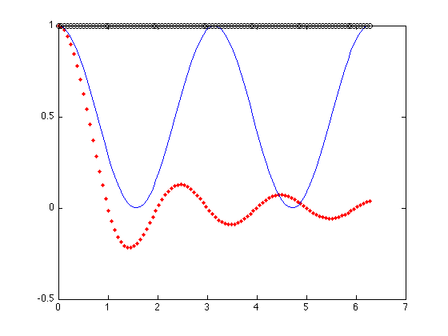
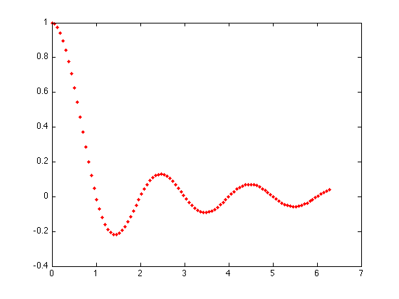
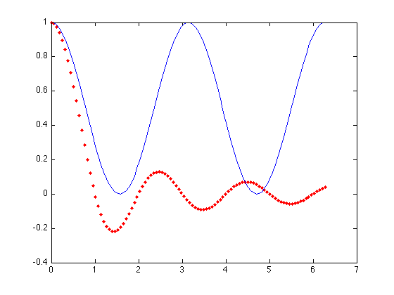
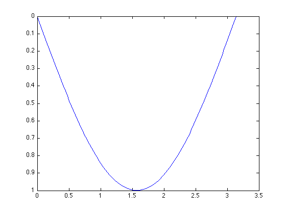
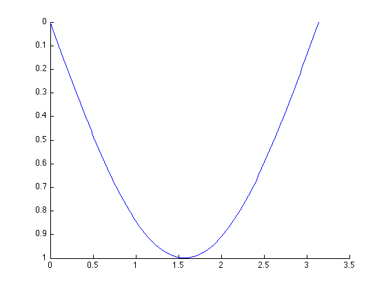

More about plotting
A.J. Melhus, 4-18-10; Revised by C. Chen, 2-17-12
Contents
Multiple Plots, way 1
Use multiple arguments within one plot command:
Syntax:
plot(x_1,y_1,'aesthetic_1', ..., x_n, y_n, 'aesthetic_n')
For example:
t = linspace(0,2*pi); plot(t, sinc(t), 'r.', t, (cos(t)).^2, t, (sin(t)).^2+(cos(t)).^2, 'ko')
This command plots sinc(t) (red dotted line), cos^2(t) (default blue solid line), and sin^2+cos^2(t) (black circles) all on the same plot.
Multiple Plots, way 2
Use hold on/off command:
You can use the hold command to make adjustments to the current figure without erasing objects or information.
(hold is a more logical way of plotting multiple objects at once, and is not as crammed.)
As in the previous example:
t = linspace(0,2*pi);
Let's plot sinc(t) first, using red dotted line:
v1 = sinc(t);
plot(t,v1,'r.')
 Now, we use hold to toggle figure to allow more figure actions
hold on;
(By default, hold is off, so the original plot is erased when we call plot command.)
We can then continue on other lines:
v2 = (cos(t)).^2; plot(t,v2)
(If aesthetic is not specified, MATLAB will use the default setting: blue solid line.)
v3 = (sin(t)).^2 + (cos(t)).^2;
plot(t,v3,'ko')
We can release figure toggle by typing
hold off;
Reversing axes
Reversing axes is often useful in astronomy: think about the magnitude scale, where brighter is more negative.
Note that, there are two ways to change the axis direction: set(gca, ...) and set(axes, ...). When using set(gca, ...) we are modifying the current figure we just drew, so always use set(gca, ...) AFTER you use plot(...):
figure(3); clf; plot(linspace(0,pi), sin(linspace(0,pi))); set(gca,'YDir','rev');
However, when using set(axes, ...) we are setting up the graphic environment for the new figure we are going to draw, and it must be called BEFORE the plot command. Also, you'll need to call hold so your plot command won't clean up your set(axes, ...) settings:
figure(3); clf; set(axes,'YDir','rev'); hold on; plot(linspace(0,pi), sin(linspace(0,pi)));
Sometimes it's more complicated to use set(axes, ...) than using set(gca, ...), especially when you are using loglog command instead of plot, because you'll need to include the log-scale setting in your set(axes, ...) command:
set(axes, 'XScale', 'log', 'YScale', 'log', 'XDir', 'rev')
Therefore, though set(axes, ...) provides more degrees of freedom to set up the axis system, we recommend you to use set(gca, ...) in all labs.